В конце 2025 года Яндекс Телемост сделал поворот: из инструмента для видеозвонков — в полноценный мессенджер с чатами, каналами, звонками и тредами. Задача от заказчика — сделать его частью повседневной жизни, а не только сервисом для созвонов.
Телемост
Стратегия вывода Яндекс Телемоста в B2C. Не ещё один мессенджер, а единое пространство, где человек общается, созванивается и управляет своими делами.
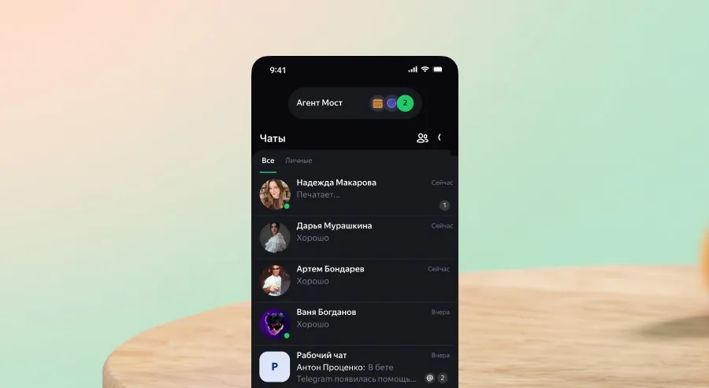
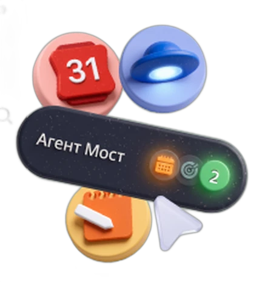
Кратко
30 секунд на чтениеЗадача
Телемост знают как созвоны по работе, а не как место для жизни
Продукт стал мессенджером. Нужно вывести его в B2C: привлечь аудиторию, связать с Яндекс 360 и найти монетизацию.
Инсайт
Люди остаются в старом мессенджере не из любви, а потому что там все
Сетевой эффект сильнее лояльности. Значит, нужен не ещё один чат, а то, чего нет у других: порядок в делах и жизни.
Решение
Агент Мост собирает чаты, звонки и дела в одно место
Утренний брифинг, режимы «личное и работа», саммари пропущенного в звонке и веб-чат для близких без регистрации.
Смотреть решениеИз сервиса для видеозвонков — в продукт, которым пользуются каждый день
1
Привлечь новую аудиторию
Тех, кто знает Телемост только по рабочим встречам.
2
Найти рост в Яндекс 360
Связать мессенджер с календарём, документами и заметками.
3
Предложить монетизацию
Модель, где платить за продукт понятно и оправданно.
Разобрались, за что люди любят мессенджеры и почему не уходят из них
~20глубинных интервью
5продуктов в конкурентном анализе
3сегмента аудитории
За что любят продукты, которыми уже пользуются
Telegram
Контроль и гибкость: папки, боты, «Избранное» как личный архив.
iMessage
Просто работает, без лишних действий.
Zoom
Надёжность в одной узкой задаче.
MAX
MAX
Единая точка входа в экосистему.
Snapchat
Лёгкость и никакого давления «сохранить навсегда».
Вывод
Никто не объединяет общение, звонки и дела
Каждый закрывает свой кусок жизни. Здесь — место для Телемоста.
Что услышали в интервью
Главный инсайт
«Я бы перешла, но там никого нет»
Люди не уходят из старого мессенджера не потому, что он им нравится, — они не верят, что туда перейдут остальные. Сетевой эффект сильнее лояльности.
⭐️Избранное
Хранилище жизни
Мысль потерять «Избранное» вызывает тревогу.
💻Устройства
Телефон плюс компьютер
Кроссплатформенность делает мессенджер рабочим инструментом.
📞Звонки
«Отошла на минуту — и потеряла нить»
В групповых звонках теряется контекст при коротких отлучках.
Три сегмента — и фокус на двух
Фокус
Решалы
Используют мессенджер для работы и задают сценарии для остальных.
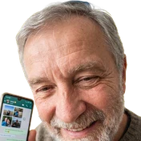
Фокус
Эмпаты
Приходят за связью с близкими и удерживают в продукте всю семью.
Вне фокуса
Душа компании
Собирают людей в общие чаты, но на этом этапе не в приоритете.
Персона
💬12 новых в рабочем чате
📞Пропущенный: мама
📅Созвон в 16:00 пересекается с кружком
Агент МостСобрал всё в план на день: созвон, мама, 12 сообщений
Люда, 36 лет
Проджект-менеджер на удалёнке, мама
Держит в голове чаты, звонки, календарь и заметки, разбросанные по разным приложениям.
«Трачу больше сил на то, чтобы собрать всё по кускам, чем на само общение»
Единое пространство, где можно не только общаться, но и управлять жизнью
Каждую фичу проектировали от задачи пользователя по методологии JTBD: сначала — какую работу человек «нанимает» продукт сделать, потом — интерфейс.
01Агент Мост: встреча из переписки
ДжобаНе терять договорённости из чатов и не переносить их в календарь вручную
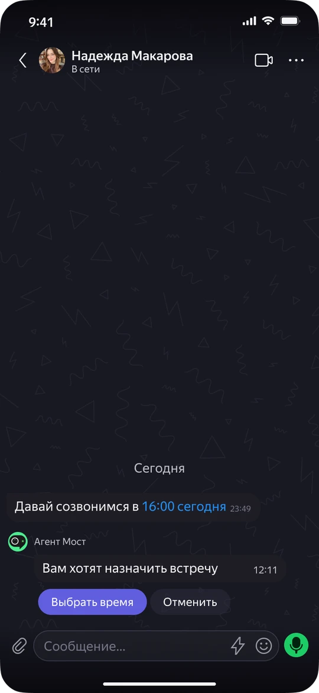
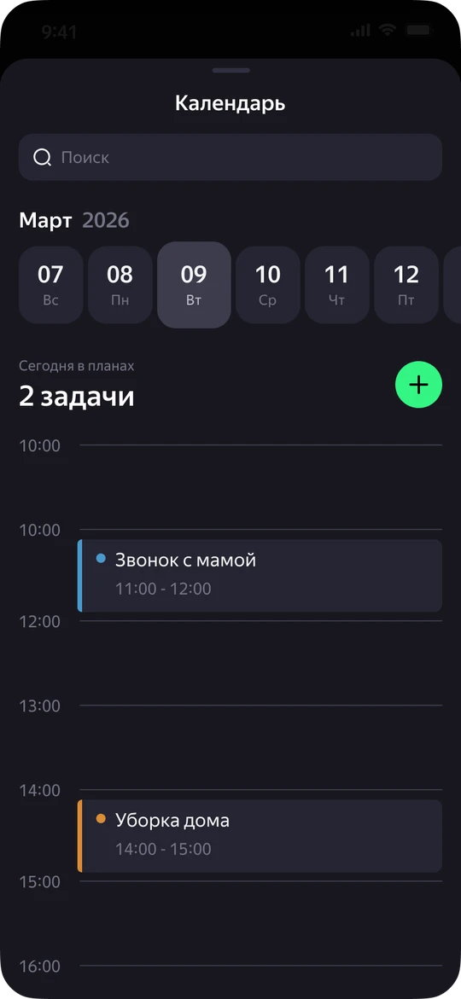
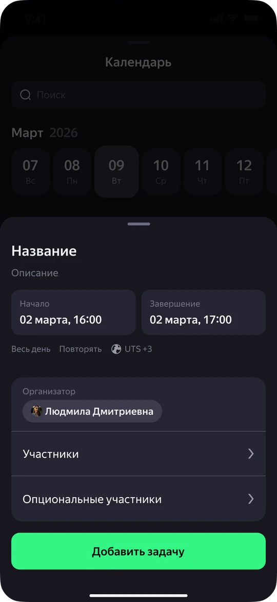
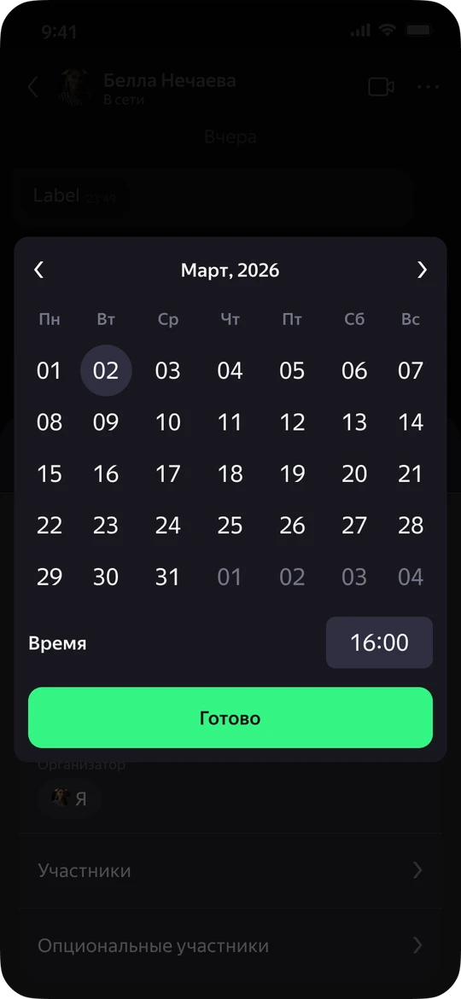
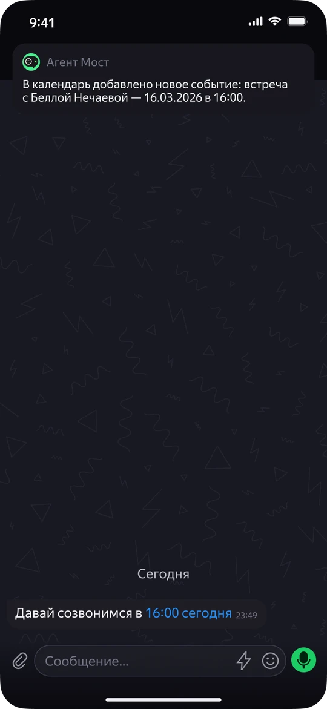
02Агент Мост: создание задачи
ДжобаБыстро понять, что происходит сегодня, и не держать всё в голове

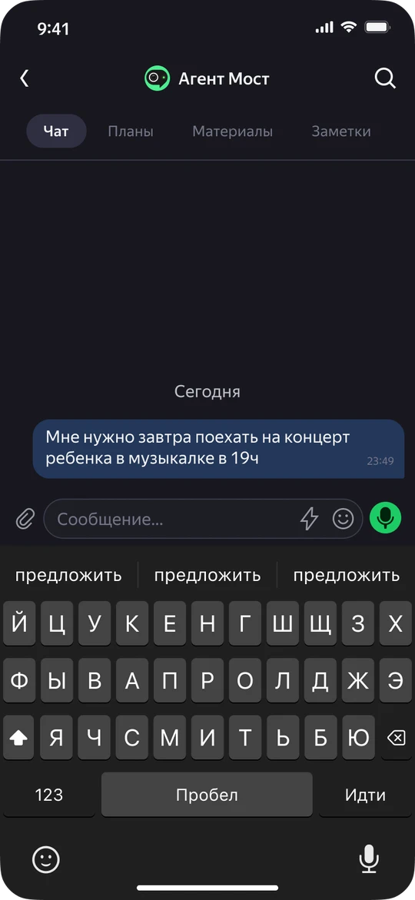
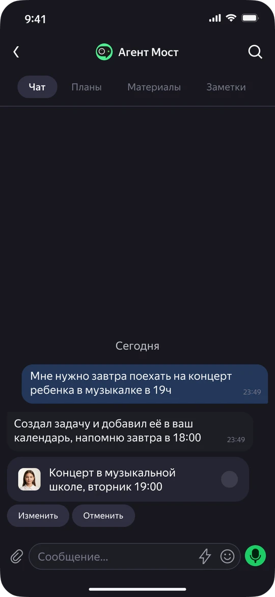

03Режимы аккаунта
ДжобаНе отвлекаться на личное во время работы — и наоборот
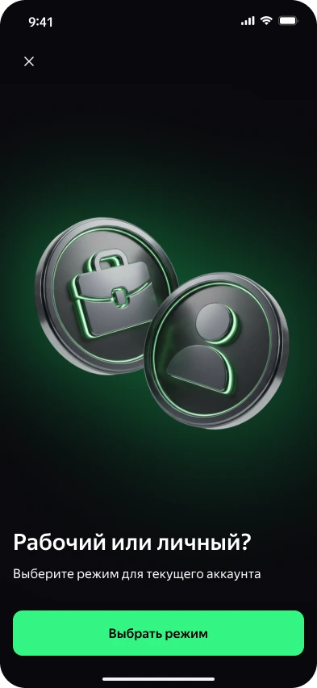
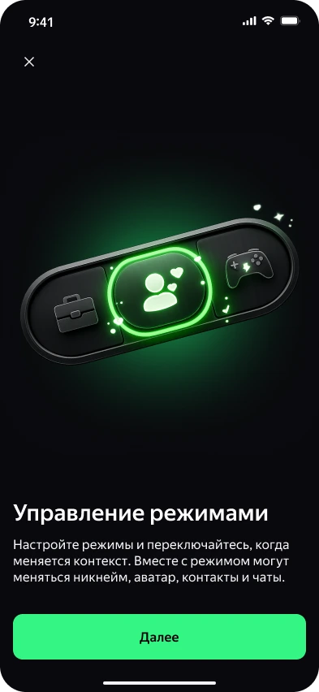
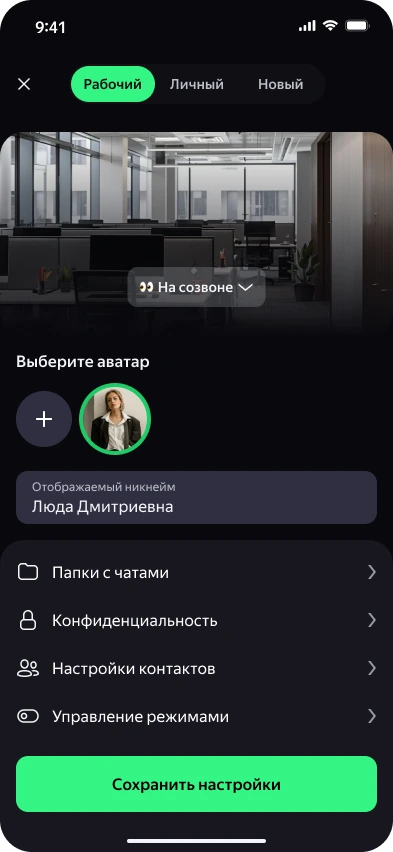
04Саммари звонков
ДжобаНе терять нить разговора после короткой отлучки
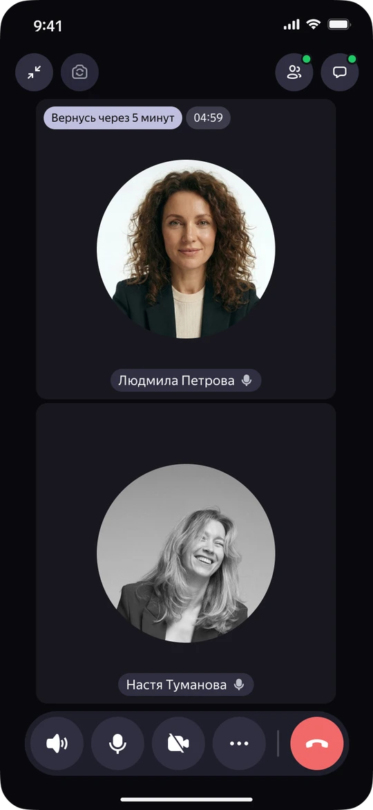
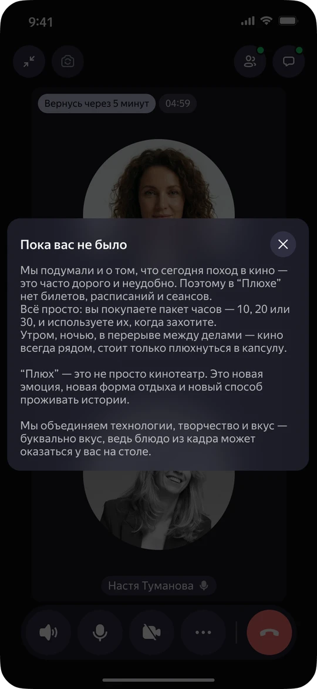
05Веб-чат без регистрации
ДжобаПозвать в чат того, кто не готов ставить приложение
9:41
Пригласить в чат
Без установки приложения
🔗
telemost.ya/romashkaСсылка на чат
🔑
Кодовое слово«ромашка»
Отправить маме
Скопировать ссылку
9:41
telemost.ya/romashka
Чат «Семья»
Откроется в браузере
ромашка
Войти без регистрации
9:41
telemost.ya/romashka
Семья
В браузере
Мама, привет! Это наш новый чат 💚
Ой, как просто! Всё вижу
В субботу ждём у нас к обеду
06Семейный календарь
ДжобаВидеть задачи и планы близких в одном месте
9:41
Среда, 12 марта
Ваши планы и планы семьи
💼
Созвон с командойВы
10:00🏫
Родительское собраниеСаша
15:00🎨
Кружок МашиМаша
16:00🍽
Ужин у бабушкиВся семья
19:009:41
Ужин у бабушки
Сб, 15 марта · 19:00
👥Участники
👩
ЛюдаИдёт
👨
СашаИдёт
👧
МашаИдёт
👵
МамаОрганизатор
✓ Событие видно всей семье
07Агент Мост: создание заметки
ДжобаБыстро записать мысль и потом найти её, не переключаясь между приложениями
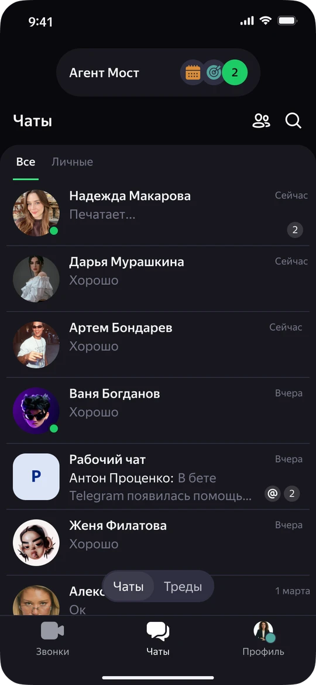
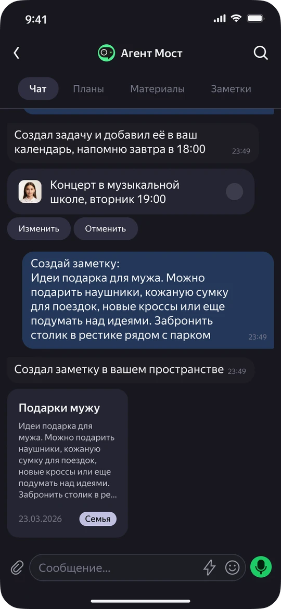
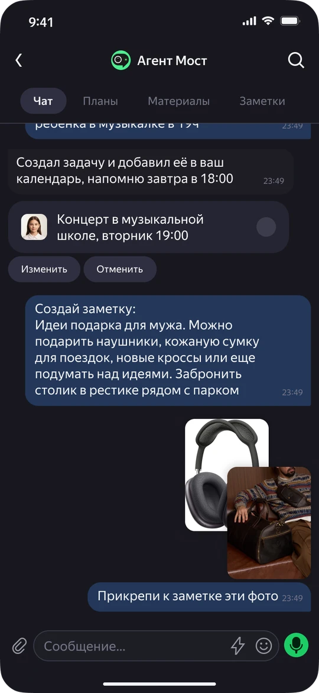
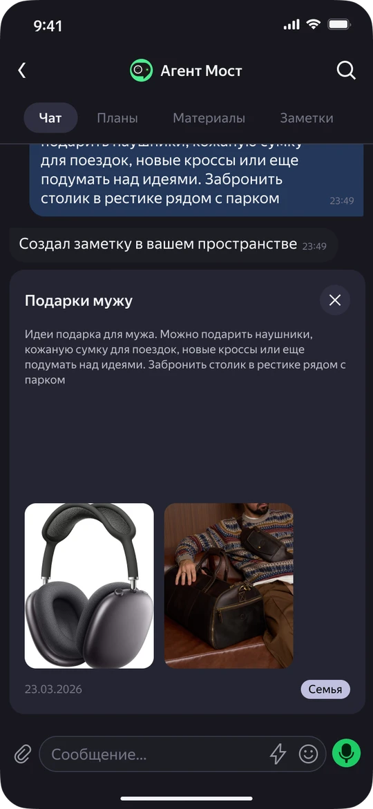
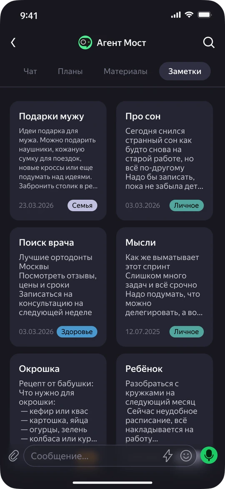
Все экраны проекта
Чаты, звонки, Агент Мост, режимы, календарь и заметки
Экран 1
Экран 2
Экран 3
Экран 4
Экран 5
Экран 6
Экран 7
Экран 8
Экран 9
Экран 10
Для каждой фичи заранее определили, на какие метрики она влияет
🗓️Агент МостУдержание и привычка
🔗Веб-чатРост и привлечение
📝Саммари звонковВовлечённость и удовлетворённость
Модель монетизации
💬Базовый0 ₽
Чаты, звонки, заметки, календарь и режимы.
✨Телемост Плюс299 ₽/мес
Расширенные возможности Агента Моста.
👨👩👧ГруппаСемья
и команда
и команда
Одна подписка на близких или коллег.
Проверили решения на пользователях и заглянули дальше Яндекс 360
🧪Валидация
Юзабилити-тестирование
Провели первую итерацию, запланирована вторая. Количественный опрос запущен — цифры не приводим, пока ответов недостаточно.
Видение
Агент Мост для всей экосистемы Яндекса
Такси, еда, музыка, фильмы — Телемост становится точкой входа в управление повседневной жизнью.
Презентовали проект в офисе Яндекса и получили положительную обратную связь
Главное, что отметили, — каждая фича выросла из задачи пользователя и сразу связана с продуктовой метрикой. Это отличает продуктовое решение от набора красивых экранов.
Следующий кейсГигасправка